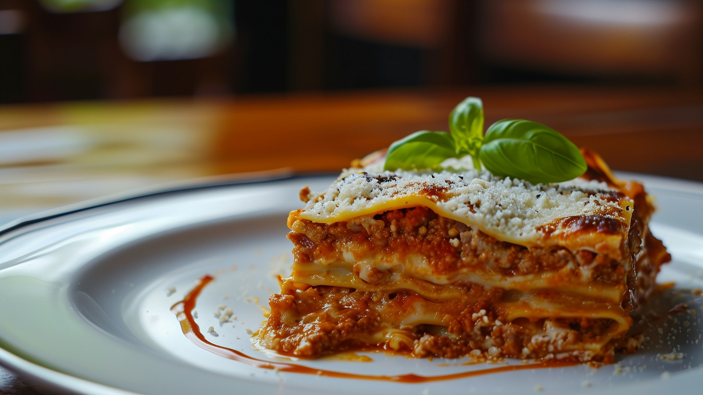

Lasagne
This lasagna is a classic, comforting dish with layers of rich tomato sauce, creamy cheese, and tender pasta
sheets. It is hearty, satisfying, and perfect for a cozy dinner or for sharing with friends. The flavors
deepen as it bakes, making it even better after a short rest. It is approachable for beginners
but still feels like a special, homemade meal.

Ingredients
- Lasagna sheets
- Olive oil
- Onion
- Garlic
- Ground beef (or a vegetarian alternative(
- Tomato passata or canned crushed tomatoes
- Tomato paste
- Dried oregano
- Dried basil
- Salt
- Black pepper
- Ricotta cheese
- Mozzarella cheese
- Grated Parmesan cheese
Steps
- Preheat the oven and lightly grease a baking dish.
- Heat olive oil in a pan and sauté the chopped onion until soft.
- Add garlic and cook briefly until fragrant.
- Add the ground beef and cook until browned.
- Stir in tomato paste, passata, herbs, salt, and pepper, then let the sauce simmer.
- Spoon a layer of sauce into the baking dish, followed by lasagna sheets and a layer of ricotta and
mozzarella.
- Repeat the layers until all ingredients are used, finishing with sauce and Parmesan on top.
- Bake at 180 °C for 40-45 minutes until bubbling and golden on top.
- Let the lasagna rest for a few minutes before slicing and serving.